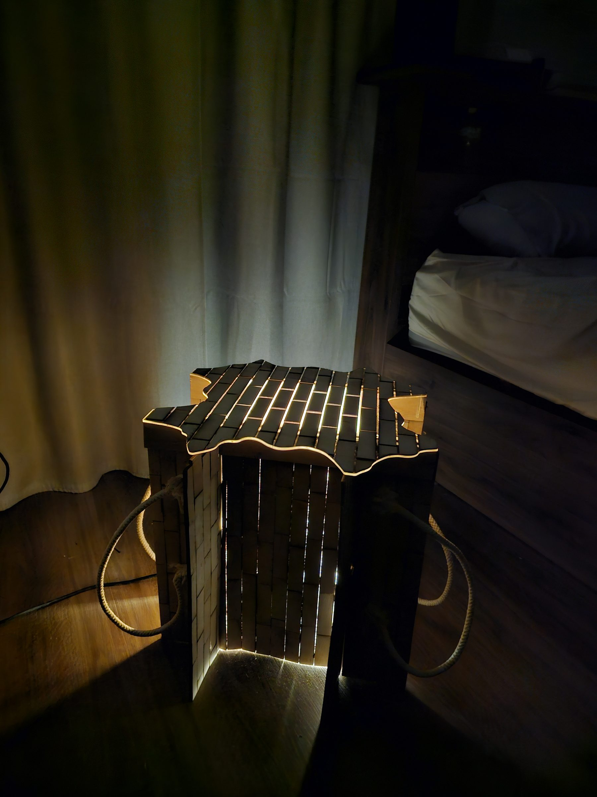
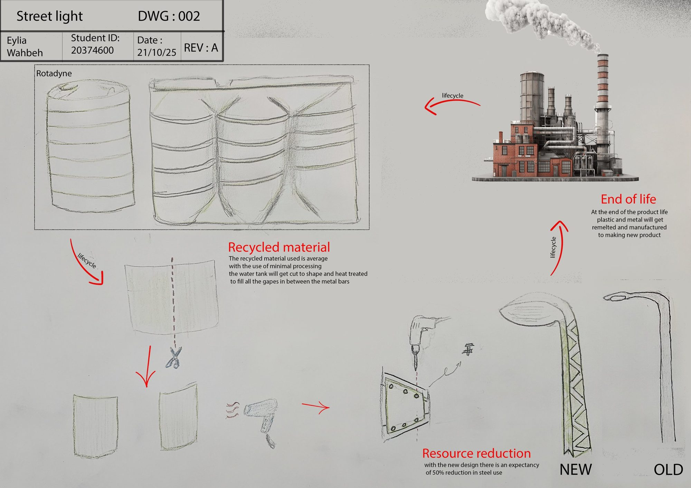

Design
Human-centred research, ergonomics, sketching, form development and visual storytelling.
Open to industrial design roles · Sydney
I take products from user research and sketch to SolidWorks and a working prototype. Before design I worked in electrical engineering, construction and IT, so my concepts are shaped by how things actually get made, wired, maintained and used.
Selected work

Featured case studyInteraction · Lighting · Prototyping
An interactive stool for Sydney VIVID that strangers have to build together. The seat splits into five portable parts. When people reassemble it correctly, it lights up.

System design · Research
An adaptive sensory system for long missions on the ISS, aimed at homesickness, monotony and mealtime fatigue. Includes journey mapping and a personalised control system.
View case study
Product · Soft goods · Making
A leather tool apron that rolls from a flat work surface into a compact pouch in one motion. Developed through paper patterns, laser cutting and wet-moulding tests, then built by hand.
View case study
Circular design · SDG 12
A street light and a Dolphin torch redesigned so they get repaired rather than replaced, using modular access, fewer parts and end-of-life separation.
View case studyMedical · Ergonomics · Industry
Comfort-led form development and skin-contact material work for a global medical technology company. I can walk hiring teams through it privately.
View overviewWhat I bring
Most design graduates hand over a render. I can also take a concept through to how it’s wired, built and supported.
Human-centred research, ergonomics, sketching, form development and visual storytelling.
Electrical engineering study, electronics and hands-on construction experience. I prototype in real materials and integrate lighting and electronics myself.
Project management, IT support and customer experience. I keep projects moving and explain decisions clearly to engineers, clients and end users.
About
I’m an industrial designer based in Sydney, studying Industrial Design at Western Sydney University. I came to design after working across electrical engineering, construction, IT support and project management. That background shows in my work: I like objects that are clear to use, honest about how they’re made and straightforward to repair.
My style is functional minimalism with one deliberate moment of expression. I do my best work where the sketchbook, CAD and the workshop overlap.
Ergonomics, prototyping, human-centred design, systems thinking.
Industrial and product design roles in Sydney, full-time or internship.
I’m open to full-time roles, internships and freelance product work.